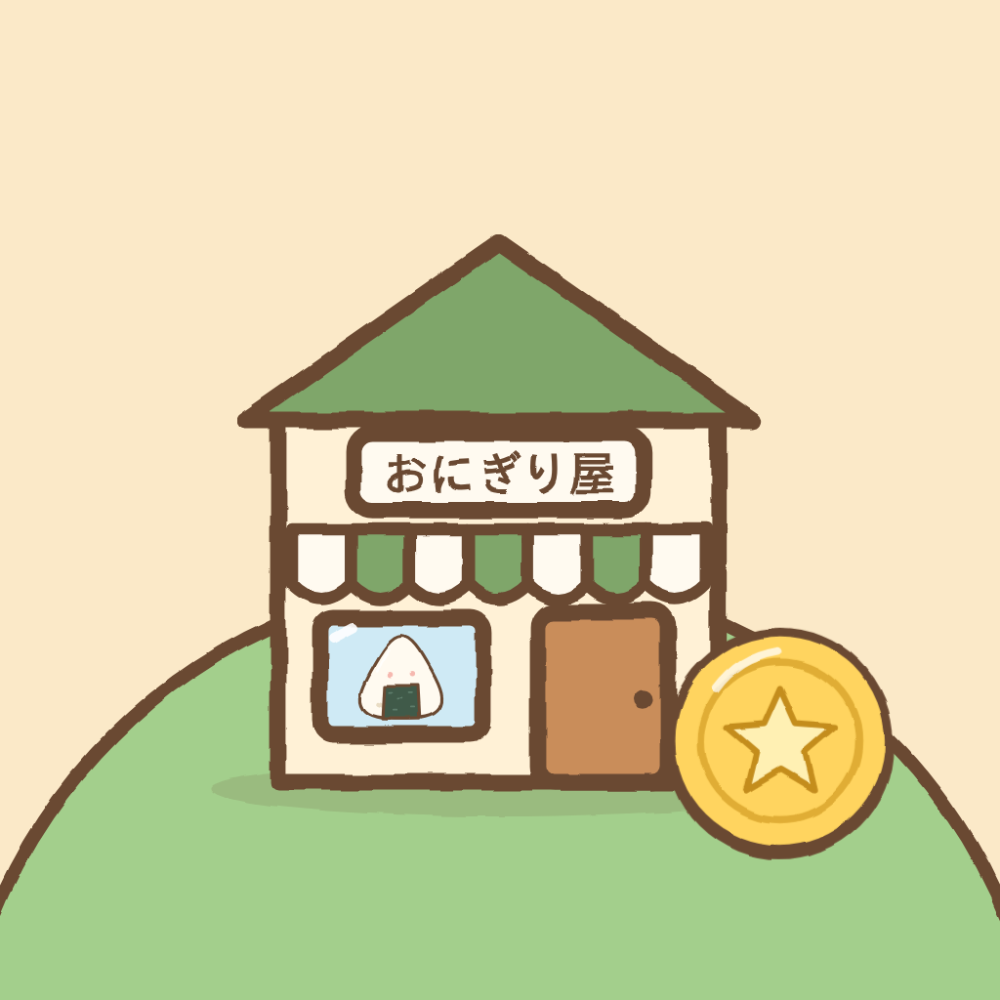

まちかどバイト算数
町のお店でアルバイトをしながら、小学校の算数をおぼえるゲーム
ご意見・不具合のご連絡は、下のメールアドレスまでお送りください。お使いの端末（iPhone・iPad・Mac）と、どの画面で何が起きたかを書いていただけると助かります。
よくある質問
- お金はかかりますか？
- ダウンロードは無料です。おにぎり屋から駅までの 5 つのお店は無料で遊べます。手芸屋から空港までの残り 9 店は、買い切りの「町をぜんぶひらく」（日本では 600 円）を一度買うと遊べます。月額料金や広告はありません。
- 子どもがまちがって買ってしまいませんか？
- 購入の画面に進む前に、おうちの方向けの確認（漢数字で書いた数を数字で入れる）があります。ファミリー共有の「承認と購入のリクエスト」を使うと、保護者の承認なしには購入できません。
- 機種変更やアプリの入れ直しで、購入はどうなりますか？
- 同じ Apple アカウントなら、「せってい」→「おうちの人へ」→「購入の画面へ」にある「購入を復元」で取り戻せます。もう一度お金がかかることはありません。ファミリー共有にも対応しています。
- 遊んだ記録は引き継げますか？
- 遊んだ記録は端末の中にだけ保存しているため、別の端末には引き継げません。アプリを削除すると記録も消えます。
- 子どもの進み具合を見るには？
- 「せってい」→「おうちの人へ」で、合格したお店の数、単元ごとの正解の数、最近まちがえた問題を見られます。
- トロフィー（Game Center）とは？
- お店で合格したときなどにもらえる記念のトロフィーです。端末で Game Center にサインインしているときだけ記録されます。サインインしていなくても、ゲームはすべて遊べます。